ONGs Ambientais
Conheça organizações que trabalham pela preservação da natureza

WWF Brasil
Trabalha pela conservação da biodiversidade e promoção do uso sustentável dos recursos naturais.
Atuação Global
Visitar Site
SOS Mata Atlântica
Defende a floresta mais ameaçada do Brasil desde 1986.
Mata Atlântica
Visitar Site

Greenpeace Brasil
Atua contra as mudanças climáticas e pela proteção das florestas.
Atuação Global
Visitar Site
Instituto Terra
Fundado por Sebastião Salgado, recupera ecossistemas degradados.
Minas Gerais
Visitar Site
IPÊ - Instituto de Pesquisas Ecológicas
Desenvolve projetos de conservação da biodiversidade e educação ambiental.
Diversos biomas
Visitar Site

Sea Shepherd Brasil
Protege a vida marinha através de ações diretas e campanhas.
Oceanos
Visitar Site